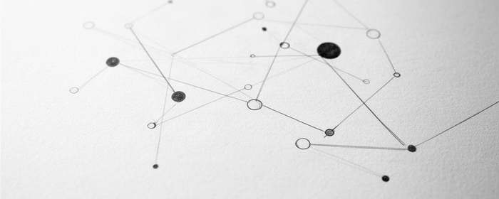
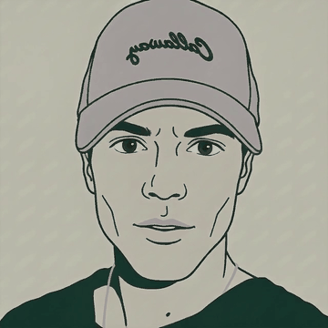
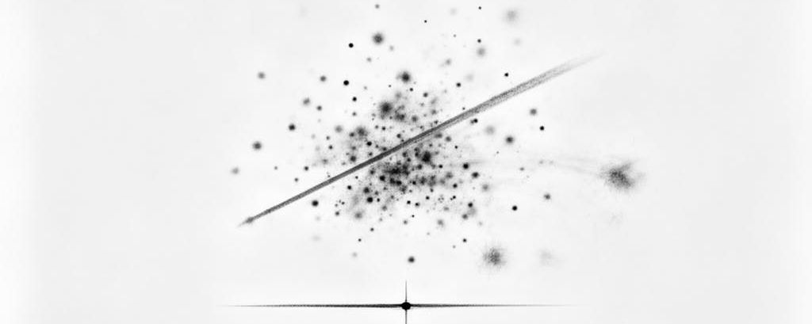
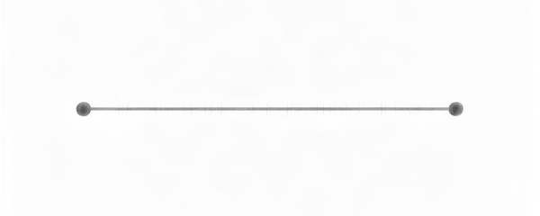
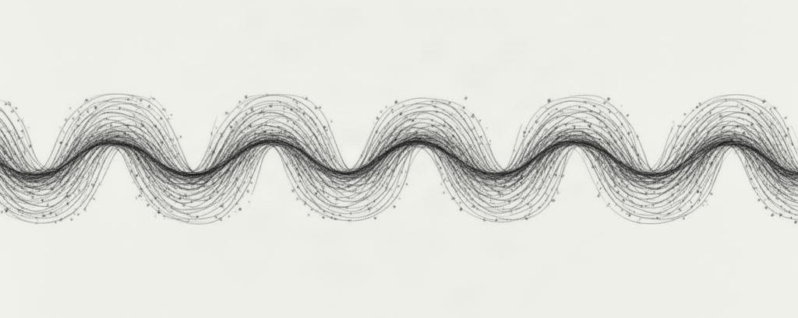
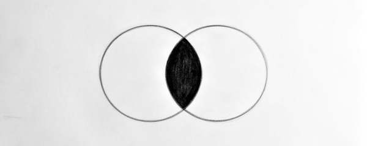

Soluciones de IA
He contribuido a soluciones de IA en entornos corporativos, donde lo que se pide no es una demo sino algo que aguante en producción.
Guzmán GP
Abierto a proyectos
Freelance · IA, datos y backend
Más de 8 años contribuyendo a diferentes soluciones de IA en entornos corporativos; he sido ingeniero de IA en interfaces conversacionales, consultor de ciencia de datos y desarrollador backend senior.

Enfoque
Busco soluciones simples:scripts, servidores escalables, bases de datos y conexiones API — lo imprescindible para que tu lógica funcione.
En qué puedo ayudarte

He contribuido a soluciones de IA en entornos corporativos, donde lo que se pide no es una demo sino algo que aguante en producción.

Como consultor: entender los datos que ya tienes, sacarles una respuesta útil y saber cuándo el modelo no es la respuesta.
Desarrollo backend senior, y el frontend necesario para usarlo. La parte que nadie ve y de la que depende que todo lo demás funcione.
El ritmo
Es difícil seguir el ritmo a la cantidad de novedades digitales que salen cada día.Ni yo mismo soy capaz de conocerlo todo. Lo que nunca me ha faltado es el tiempo y las ganas de conocer estas herramientas y ponerlas en práctica. Si no lo domino, lo investigo. Si se escapa de mi alcance, te digo qué otro perfil me puede complementar en la tarea.
Cómo trabajamos

Tienes algo concreto en mente, acotado, definido, con principio y final. Lo dimensionamos y lo construyo.

¿Necesitas a alguien de forma continuada o tienes una idea difusa? Evolucionamos el producto, lo iteramos o lo mantenemos, resolviendo lo que aparezca.

Si me convences ;) — entro en la idea y remamos juntos.
Contacto